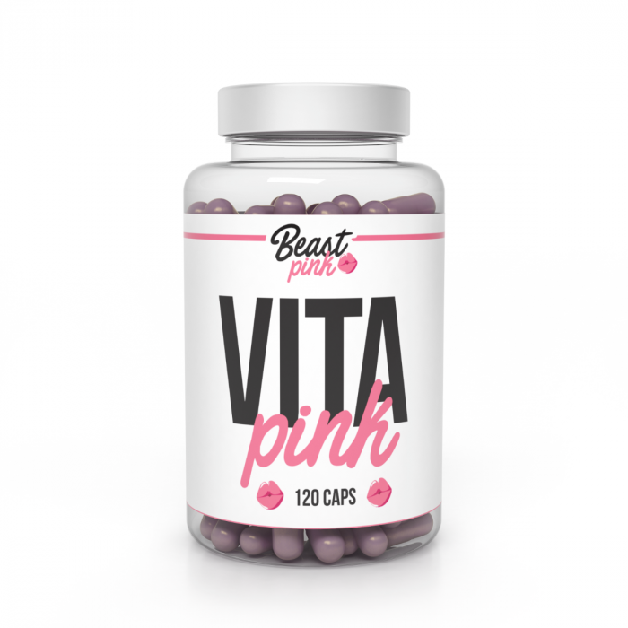
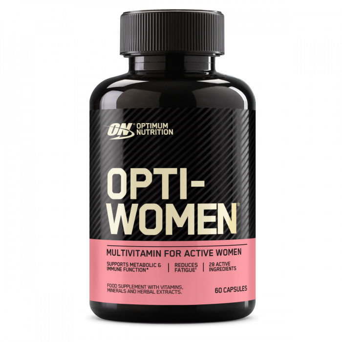

Vitamin
Complex Vitamin

A Vitality Complex egy funkcionális táplálékkiegészítő a mindennapi egészség és vitalitás megőrzéséhez. Ez a táplálékkiegészítő 24 gondosan válogatott aktív összetevőt tartalmaz, köztük 10 vitamint, 5 ásványi anyagot és emésztőenzimeket. Olyan mikrotápanyagok komplex keverékét tartalmazza, amelyek részt vesznek olyan létfontosságú testi funkciókban, mint a regeneráció, az emésztés, az immunreakció és az idegrendszeri aktivitás.
5699 Ft
Fontos Vitamin

A D3-vitamin 2000 IU a D-vitamin, más néven kolekalciferol legjobban hasznosítható formája. Támogatja az immunrendszert, a csontok és a fogak egészségét, valamint a megfelelő izomműködést.A D-vitamin bevitelt nemcsak a sportolók fogják értékelni, hanem bárki, aki maximálisan támogatni szeretné egészségét.
3699 Ft
Gyerek Vitamin

A C-vitamin 1000 mg egy L-aszkorbinsav (C-vitamin) tartalmú táplálékkiegészítő könnyen lenyelhető tabletta formájában. Ez az alapvető fontosságú vitamin közismerten számos biológiai folyamatban vesz részt a szervezetünkben. Hozzájárul például az immunrendszer, az idegrendszer és a psziché megfelelő működéséhez. Hatásainak köszönhetően népszerű a sportolók, az aktív életmód kedvelői, valamint mindazok körében, akik szeretnék elősegíteni az általános egészséget és vitalitást.
2999 Ft
Puncsos Vitamin
A D3-vitamin 2000 IU a D-vitamin, más néven kolekalciferol legjobban hasznosítható formája. Támogatja az immunrendszert, a csontok és a fogak egészségét, valamint a megfelelő izomműködést.A D-vitamin bevitelt nemcsak a sportolók fogják értékelni, hanem bárki, aki maximálisan támogatni szeretné egészségét.
12999 Ft
Férfi Vitamin

Az Omega-3 eikozapentaénsavat (EPA) és dokozahexaénsavat (DHA) tartalmaz. Ezek a halolajban megtalálható egészséges zsírsavak közé tartoznak. Hozzájárulnak a megfelelő szívműködéshez, míg maga a DHA emellett önmagában hozzájárul a látás egészségének megőrzéséhez, és az optimális agyi funkciók fenntartásához. Az omega-3 zsírsavak segítségével hatékonyan gondoskodhatsz egészségedről.
7999 Ft
Hölgy vitamin
A Magnézium-kelát (biszglicinát) étrend-kiegészítő kapszula rendkívül gazdag magnéziumban, amiből a kivételesen jó felszívódású kelát formának köszönhetően a legtöbbet hozhatod ki. A magnézium számos fontos szerepet tölt be a szervezetben – segít többek között mérsékelni a fáradtságot és a kimerültséget, valamint hozzájárul az idegrendszer és az izomzat optimális működéséhez.